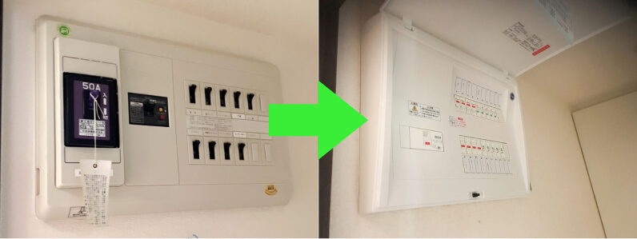

ジモデン登録の
電気工事店なら
55,000円(税込)~
- ※メイン：漏電ブレーカー30A
- ※子ブレーカー６個
分電盤交換で知っておきたい 交換費用相場と 適正業者の探し方
分電盤交換費用と業者選びのポイント
分電盤内に設置されているブレーカーは耐用年数が１３年とされています。
古くても電気が正常に使えるから大丈夫と思うのは間違いで、ブレーカーは漏電、電気の事故、電気の使い過ぎなどの異常時に動作して感電や電線・電気機器の焼損を防ぐ重要な機械です。
はたして古いブレーカーは電気の異常があった時に正常に動作して守ってくれるでしょうか？それは分からないので早目の交換が推奨されています。
分電盤交換費用の相場、適切な業者の探し方を電気工事のプロが解説します。
Index
01 電気工事業者へ依頼すると分電盤交換費用の相場は？
設置状況や回路数により異なりますが、一般的な住宅や小規模店舗・事務所の分電盤交換費用は下記となります。
※令和6年4月1日時点
- 分電盤の値段
- 22,000円～
55,000円程 - 交換費用
- 30,000円～
40,000円程 - 取外した分電盤の処分費
- 2,000円程
- 分電盤交換総額
- 55,000円～
100,000円程
※出張費、基本料などの項目がある業者もありますが、総額で55,000円～100,000円（税込）が相場。
1 分電盤交換費用例① (回路数が少ない)
-
- 主幹
- 漏電ブレーカー40A
- 子ブレーカー
- ８個
- 工事の総額
- 60,500円 (税込)
2 分電盤交換費用例② (回路数が多い)
-
 - 主幹
- 漏電ブレーカー50A
- 子ブレーカー
- １８個
- 工事の総額
- 88,000円 (税込)
3 分電盤交換費用例③ (木箱の分電盤)
-
- 主幹
- 漏電ブレーカー40A
- 子ブレーカー
- １２個
- 追加工事
- 配線延長、木板設置
- 工事の総額
- 88,000円 (税込)
分電盤交換は設置状況により追加費用が必要となります。
主な追加費用は、
- 木箱内⇒木箱撤去又は木箱表面に設置する
- 分電盤の外に増設ブレーカーが何個もある⇒整線
- 分電盤の外に露出配線が何本もある⇒整線
などがあります。
02 なぜ古い分電盤を交換したほうがよいのか？
分電盤内に設置されているブレーカーは電気の使い過ぎ、回路の異常、漏電を守る装置です。
古い分電盤を使い続けると、故障により【入】にできなくなったり、電気の異常時に動作せず、火災などの事故につながる危険性が高まります。分電盤を交換したほうがよい３つの理由を解説します。
1 ブレーカーの故障により停電する
経験上、主幹（メインブレーカー）として設置されている漏電ブレーカーが故障することは多く、停電して電気が全く使えない状態になり、漏電ブレーカーを取替えるまで停電が続きます。
- 漏電ブレーカーが【入】にできないのは故障ではなく実際に漏電しており、漏電ブレーカーが動作していることもあります。簡単な確認方法は下記となります。
子ブレーカを全て【切】にして
- 漏電ブレーカーが【入】になる
⇒どこかで漏電している - 漏電ブレーカーを【入】にできない
⇒漏電ブレーカーの故障
- 漏電ブレーカーが【入】になる
- 特に真夏と真冬に漏電ブレーカーが突然故障することが多く、【入】にできなくなり停電状態が続いてしまいます。このような時は焦って業者を探すよりも、電力会社へ相談しましょう。
ただし、電力会社は仮の漏電ブレーカーを取付けとなり、費用が8,000円程必要となります。
電力会社はあくまで電気が使える状態への仮工事となりますので、電気が復旧しましたら、落ち着いて電気工事業者を探しましょう。
2 子ブレーカーも電気の事故を遮断する大切な装置
- 小さなブレーカーも電気の安全を守る機械。古くなったブレーカーが正常に動作するかは分かりません
- 古い住宅では専用回路が少ないため、１つの回路に対して複数台のキッチン電化製品の使用により過電流（電線に対して）になることも多く、子ブレーカーが正常に動作しないと電線が焼けてしまうこともあります
3 かなり古い分電盤では漏電ブレーカーが設置されていないことも
- メインブレーカーとして電力会社の契約ブレーカー（アンペアブレーカー）が設置され、漏電ブレーカーがないので危険
- 漏電ブレーカーで守られていないので、漏電していても遮断されない
03 分電盤交換はどこへ頼めばよいのか？
では実際に分電盤の交換をしたい場合に、どこへ、どのように頼めば良いのでしょうか？
分電盤交換工事を行う業者は、地元の電気工事業者、街の電気店です。ハウスメーカーや管理会社へ依頼をしても、施工は電気工事業者が行いますので、直接依頼をしたほうが安くなります。
また、見積りは無料が基本ですが、街の電気店は見積り・調査料が必要な店舗もあります。
1 地元の電気工事業者がおすすめ
大規模施設や住宅などの電気工事を行う事業者。
事務所や倉庫で営業しているため、近くで営業していてもほとんどの方は気付かないと思いますが、精度に加えスピードを求められる仕事をこなしているので本物のプロと言えますし、迅速に動いてもらえるでしょう。
2 見積りには現地調査が必要
分電盤を交換される理由は様々で、古いから交換したい、電力会社から現状では契約を上げれないと言われた、エアコン専用回路を増やせないなど、各家庭により異なります。
分電盤を交換するには幹線サイズの確認、現状の分電盤外箱サイズ、設置状況、今後増やす予定のエアコンやIHなど電化製品の有無を確認し、対応できる分電盤を提案する必要がありますので、見積りには通常現地確認が必要となります。
- ※交換のみの場合は写真にてオンライン概算見積りが可能です
- ※見積りは無料か必ず確認しましょう
04 分電盤交換を業者へ依頼する際のまとめ
1 分電盤交換費用の相場
設置状況や回路数により異なりますが、一般的な住宅や小規模店舗・事務所の分電盤交換費用は下記となります。
※令和6年4月1日時点
- 分電盤の値段
- 22,000円～
55,000円程 - 交換費用
- 30,000円～
40,000円程 - 取外した分電盤の処分費
- 2,000円程
- 分電盤交換総額
- 55,000円～
100,000円程
※出張費、基本料などの項目がある業者もありますが、総額で55,000円～100,000円（税込）が相場。
2 分電盤交換費用の例
- ※ジモデン登録業者の費用例
- ※単純な交換のみの例
- ※令和６年１月時点
-
分電盤交換費用例① (回路数が少ない)
- 主幹
- 漏電ブレーカー40A
- 子ブレーカー
- ８個
- 工事の総額
- 60,500円 (税込)
-
分電盤交換費用例② (回路数が多い)
- 主幹
- 漏電ブレーカー50A
- 子ブレーカー
- １８個
- 工事の総額
- 88,000円 (税込)
3 どこへ見積り・工事を頼めるの？
電気工事業者
Expert 大規模施設や住宅などの電気工事を行う事業者。
事務所や倉庫で営業しているため、近くで営業していてもほとんどの方は気付かないと思いますが、精度に加えスピードを求められる仕事をこなしているので本物のプロと言えますし、迅速に動いてもらえるでしょう。
- 相場
- 分電盤交換工事
55,000円～ - 依頼方法
- 電気工事業者のホームページには分電盤交換費用を明確に記載していない場合が多いので、問い合わせページから見積りを依頼しましょう。
街の電気屋
Electrian パナソニックのお店やアトムなどの家電販売と小規模電気工事を行うお店です。街の電気屋はしっかりと料金表があり、高額請求されることはありません。ただし、見積りのために来てもらうだけで出張費や見積料を請求される可能性があります。
また、分電盤交換工事は相場より高めとなることが多いようです。それでも高額請求がない、対応が早い点でオススメです。
- 相場
- 分電盤交換工事
66,000円～ - 依頼方法
- 現地確認（見積り）をしてもらうだけで費用が発生する場合があります。まずは問い合わせをして、おおよその金額を聞いてみましょう。
インターネット集客業者
Internet くらしのマーケットやミツモアなどの集客業者です。実際に工事を行うのは提携している電気工事店となります。クチコミが掲載されているので安心感があります。
インターネット集客業者を通すと集客業者へ手数料が発生しますので、分電盤交換工事は割高となるでしょう。
- 相場
- 分電盤交換工事
66,000円～ - 依頼方法
- 金額が明確な【くらしのマーケット】又は、【ミツモア】から近くの業者へ見積りを依頼する。

電気工事施行管理20年の経験
保有資格：第一種電気工事士、１級電気施行管理技士。
電気工事の経験20年、独立後は自力で作成したホームページ集客のみで法人設立後も3年間黒字を維持。